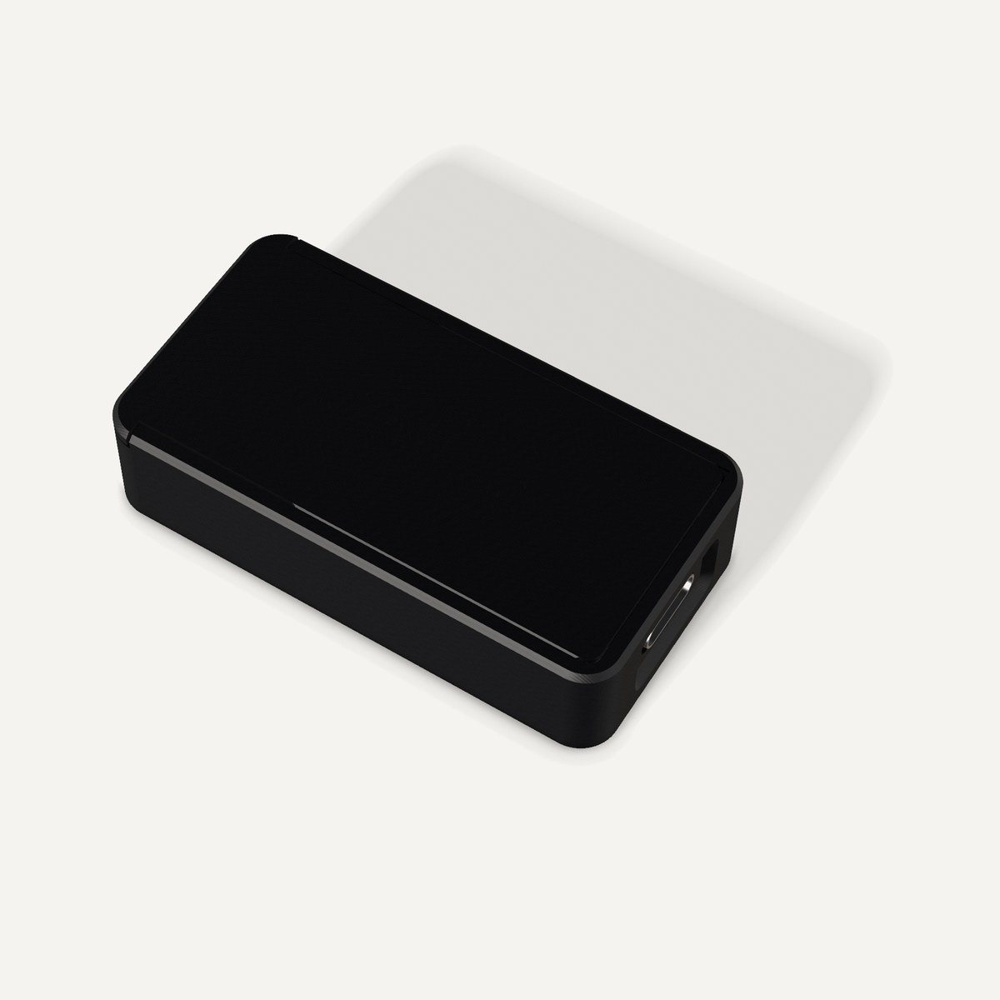

Your strength,
ahead of time
The most valuable hour you can spend in a gym: every rep counted on the machine, your strength tracked year after year, explained in plain words.
Discover the readout sensorEvery machinecounted for you
Instant resultsafter every workout
30 to 60 minof strength a week
A bigger picture in one workout
Discover the sensor


Every rep
The sensor on the weight stack counts each rep and set, with nothing to type.
Every rest
Rest is timed on its own, so every set starts when you are ready.
Every workout
One score from 0 to 100 after each workout, and what made it.
Every week
Your plan moves with you: one more rep, then more weight.
Your strength deserves attention before you need it. Know what you can lift in extraordinary detail, track what changes year after year, and let the app turn that knowledge into your next workout. It all starts with one set.
Join the waitlist
Why choose readout?
Training does not stop when the workout does. If something needs a closer look, the app shows it and a trainer can help.
Strength training needed a sensor that didn’t exist yet. That’s why readout built one: small enough for the weight stack of any machine, quiet enough to forget.
A trainer can follow your sets live, rep by rep, and send your next plan straight to your phone.
Strength is one of the habits most linked to a long, healthy life. 30 to 60 minutes a week is linked to a 10 to 20% lower risk of death, in 16 studies.
An understanding of your strength that builds over time
COUNT
A record of your strength
Every set, on every machine, saved with its reps, weight and rest. An objective picture of what you can do today.
IMPROVE
Every week you know more
Come back and the conversation is about what has changed. Those changes say more than any single workout.
IMPROVE
A clear plan forward
The app turns what changed into your next workout: one more rep, or the next weight.
“Grip strength predicted the risk of death better than blood pressure, in 140,000 people across 17 countries.”
The PURE study, The Lancet, 2015Locations
Find your readout gym
Gyms in Czechia
Stories
Latest
Inside the readout sensor
sample story
What 30 minutes a week can do
sample storyONE SET FOR THE YEARS AHEAD
Join the waitlistFirst at FitPods in Brno.